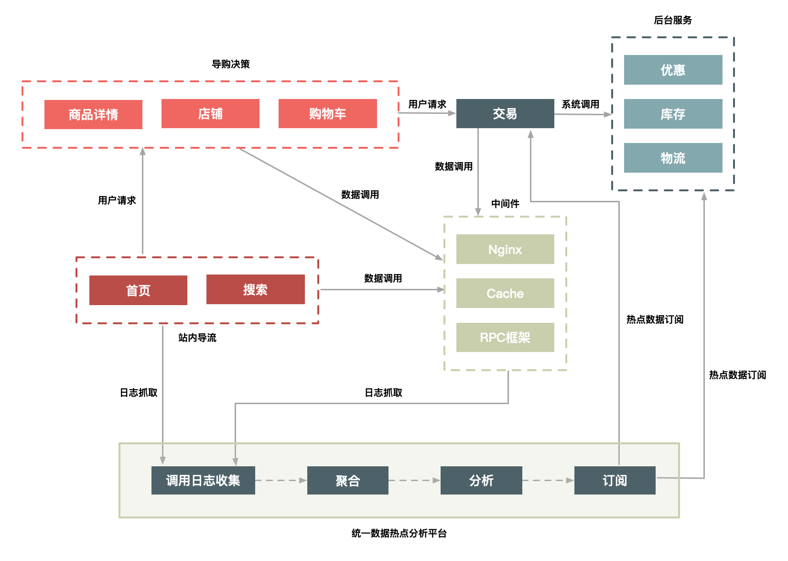

03 二八原则：有针对性地处理好系统的“热点数据”
假设你的系统中存储有几十亿上百亿的商品，而每天有千万级的商品被上亿的用户访问，那么肯定有一部分被大量用户访问的热卖商品，这就是我们常说的“热点商品”。
这些热点商品中最极端的例子就是秒杀商品，它们在很短时间内被大量用户执行访问、添加购物车、下单等操作，这些操作我们就称为“热点操作”。那么问题来了：这些热点对系统有啥影响，我们非要关注这些热点吗？
为什么要关注热点
我们一定要关注热点，因为热点会对系统产生一系列的影响。
首先，热点请求会大量占用服务器处理资源，虽然这个热点可能只占请求总量的亿分之一，然而却可能抢占90%的服务器资源，如果这个热点请求还是没有价值的无效请求，那么对系统资源来说完全是浪费。
其次，即使这些热点是有效的请求，我们也要识别出来做针对性的优化，从而用更低的代价来支撑这些热点请求。
既然热点对系统来说这么重要，那么热点到底包含哪些内容呢？
什么是“热点”
热点分为热点操作和热点数据。所谓“热点操作”，例如大量的刷新页面、大量的添加购物车、双十一零点大量的下单等都属于此类操作。对系统来说，这些操作可以抽象为“读请求”和“写请求”，这两种热点请求的处理方式大相径庭，读请求的优化空间要大一些，而写请求的瓶颈一般都在存储层，优化的思路就是根据CAP理论做平衡，这个内容我在“减库存”一文再详细介绍。
而“热点数据”比较好理解，那就是用户的热点请求对应的数据。而热点数据又分为“静态热点数据”和“动态热点数据”。
所谓“静态热点数据”，就是能够提前预测的热点数据。例如，我们可以通过卖家报名的方式提前筛选出来，通过报名系统对这些热点商品进行打标。另外，我们还可以通过大数据分析来提前发现热点商品，比如我们分析历史成交记录、用户的购物车记录，来发现哪些商品可能更热门、更好卖，这些都是可以提前分析出来的热点。
所谓“动态热点数据”，就是不能被提前预测到的，系统在运行过程中临时产生的热点。例如，卖家在抖音上做了广告，然后商品一下就火了，导致它在短时间内被大量购买。
由于热点操作是用户的行为，我们不好改变，但能做一些限制和保护，所以本文我主要针对热点数据来介绍如何进行优化。
发现热点数据
前面，我介绍了如何对单个秒杀商品的页面数据进行动静分离，以便针对性地对静态数据做优化处理，那么另外一个关键的问题来了：如何发现这些秒杀商品，或者更准确地说，如何发现热点商品呢？
你可能会说“参加秒杀的商品就是秒杀商品啊”，没错，关键是系统怎么知道哪些商品参加了秒杀活动呢？所以，你要有一个机制提前来区分普通商品和秒杀商品。
我们从发现静态热点和发现动态热点两个方面来看一下。
发现静态热点数据
如前面讲的，静态热点数据可以通过商业手段，例如强制让卖家通过报名参加的方式提前把热点商品筛选出来，实现方式是通过一个运营系统，把参加活动的商品数据进行打标，然后通过一个后台系统对这些热点商品进行预处理，如提前进行缓存。但是这种通过报名提前筛选的方式也会带来新的问题，即增加卖家的使用成本，而且实时性较差，也不太灵活。
不过，除了提前报名筛选这种方式，你还可以通过技术手段提前预测，例如对买家每天访问的商品进行大数据计算，然后统计出TOP N的商品，我们可以认为这些TOP N的商品就是热点商品。
发现动态热点数据
我们可以通过卖家报名或者大数据预测这些手段来提前预测静态热点数据，但这其中有一个痛点，就是实时性较差，如果我们的系统能在秒级内自动发现热点商品那就完美了。
能够动态地实时发现热点不仅对秒杀商品，对其他热卖商品也同样有价值，所以我们需要想办法实现热点的动态发现功能。
这里我给出一个动态热点发现系统的具体实现。
- 构建一个异步的系统，它可以收集交易链路上各个环节中的中间件产品的热点Key，如Nginx、缓存、RPC服务框架等这些中间件（一些中间件产品本身已经有热点统计模块）。
- 建立一个热点上报和可以按照需求订阅的热点服务的下发规范，主要目的是通过交易链路上各个系统（包括详情、购物车、交易、优惠、库存、物流等）访问的时间差，把上游已经发现的热点透传给下游系统，提前做好保护。比如，对于大促高峰期，详情系统是最早知道的，在统一接入层上Nginx模块统计的热点URL。
- 将上游系统收集的热点数据发送到热点服务台，然后下游系统（如交易系统）就会知道哪些商品会被频繁调用，然后做热点保护。
这里我给出了一个图，其中用户访问商品时经过的路径有很多，我们主要是依赖前面的导购页面（包括首页、搜索页面、商品详情、购物车等）提前识别哪些商品的访问量高，通过这些系统中的中间件来收集热点数据，并记录到日志中。

图1 一个动态热点发现系统
我们通过部署在每台机器上的Agent把日志汇总到聚合和分析集群中，然后把符合一定规则的热点数据，通过订阅分发系统再推送到相应的系统中。你可以是把热点数据填充到Cache中，或者直接推送到应用服务器的内存中，还可以对这些数据进行拦截，总之下游系统可以订阅这些数据，然后根据自己的需求决定如何处理这些数据。
打造热点发现系统时，我根据以往经验总结了几点注意事项。
- 这个热点服务后台抓取热点数据日志最好采用异步方式，因为“异步”一方面便于保证通用性，另一方面又不影响业务系统和中间件产品的主流程。
- 热点服务发现和中间件自身的热点保护模块并存，每个中间件和应用还需要保护自己。热点服务台提供热点数据的收集和订阅服务，便于把各个系统的热点数据透明出来。
- 热点发现要做到接近实时（3s内完成热点数据的发现），因为只有做到接近实时，动态发现才有意义，才能实时地对下游系统提供保护。
处理热点数据
处理热点数据通常有几种思路：一是优化，二是限制，三是隔离。
先来说说优化。优化热点数据最有效的办法就是缓存热点数据，如果热点数据做了动静分离，那么可以长期缓存静态数据。但是，缓存热点数据更多的是“临时”缓存，即不管是静态数据还是动态数据，都用一个队列短暂地缓存数秒钟，由于队列长度有限，可以采用LRU淘汰算法替换。
再来说说限制。限制更多的是一种保护机制，限制的办法也有很多，例如对被访问商品的ID做一致性Hash，然后根据Hash做分桶，每个分桶设置一个处理队列，这样可以把热点商品限制在一个请求队列里，防止因某些热点商品占用太多的服务器资源，而使其他请求始终得不到服务器的处理资源。
最后介绍一下隔离。秒杀系统设计的第一个原则就是将这种热点数据隔离出来，不要让1%的请求影响到另外的99%，隔离出来后也更方便对这1%的请求做针对性的优化。
具体到“秒杀”业务，我们可以在以下几个层次实现隔离。
- 业务隔离。把秒杀做成一种营销活动，卖家要参加秒杀这种营销活动需要单独报名，从技术上来说，卖家报名后对我们来说就有了已知热点，因此可以提前做好预热。
- 系统隔离。系统隔离更多的是运行时的隔离，可以通过分组部署的方式和另外99%分开。秒杀可以申请单独的域名，目的也是让请求落到不同的集群中。
- 数据隔离。秒杀所调用的数据大部分都是热点数据，比如会启用单独的Cache集群或者MySQL数据库来放热点数据，目的也是不想0.01%的数据有机会影响99.99%数据。
当然了，实现隔离有很多种办法。比如，你可以按照用户来区分，给不同的用户分配不同的Cookie，在接入层，路由到不同的服务接口中；再比如，你还可以在接入层针对URL中的不同Path来设置限流策略。服务层调用不同的服务接口，以及数据层通过给数据打标来区分等等这些措施，其目的都是把已经识别出来的热点请求和普通的请求区分开。
总结一下
本文与数据的动静分离不一样，它从另外一个维度对数据进行了区分处理。你要明白，区分的目的主要还是对读热点数据加以优化，对照“4要1不要”原则，它可以减少请求量，也可以减少请求的路径。因为缓存的数据都是经过多个请求，或者从多个系统中获取的数据经过计算后的结果。
热点的发现和隔离不仅对“秒杀”这个场景有意义，对其他的高性能分布式系统也非常有价值，尤其是热点的隔离非常重要。我介绍了业务层面的隔离和数据层面的隔离方式，最重要最简单的方式就是独立出来一个集群，单独处理热点数据。
但是能够独立出来一个集群的前提还是首先能够发现热点，为此我介绍了发现热点的几种方式，比如人工标识、大数据统计计算，以及实时热点发现方案，希望能够给你启发。
最后，欢迎你在留言区和我交流，你也可以说说在实际工作中，还有哪些发现和解决热点问题的不同思路或方案，非常期待。
© 2019 - 2023 Liangliang Lee. Powered by gin and hexo-theme-book.